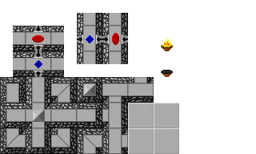

August 8, 2021
Already I’ve changed my mind on the menus for the Inventory. It’s distracting to have the health bar and other ingame stats while tinkering with spell slots. I’m going back to the idea of a separate full screen menu. Oh, and I’m pretty sure on the spell theme, so I’ll be using runes and spell slots. I can add in a staff upgrade system that will add up to four slots. The real limit to active spell slots is physical size for finger placement. The iPhone SE has 67mm width, the iPhone 4s 58.6mm width, and the Galaxy S9+ has a 73.9mm width so there’s reasonably 4 buttons at 15mm that can fit on a side with no gaps on the smallest phones. (Note to self: acquire a potato for testing - some $50 prepaid Android). To leave enough space for buttons, I’ll update the UI to move the pause and backpack icons to the left side so only spell slots are on the right.

I’m not crazy about the white areas above, but the green interactable areas feel correct and give enough space (just enough space for the smallest devices on the right-hand side). The health bar’s top left placement is fairly common. The keychain icons could be on the top bar. I may not track the player deaths on the game screen. Maybe the end-of-level screen could include the deaths and time information - stats more important as long term targets for subsequent playthroughs. In the current run, the player only needs to know what their health is, what their active spells are, and how many collectibles (scrolls, statues, relics, etc) they have.
Sidenote, I’m watching speedruns and just heard the dev of My Friend Pedro mention their business model - the free to play version makes you restart when you die while the paid version allows you to continue from your point of death. I’m not sure if they run ads on the free version, but it’s something to look into. I have considered an ad-supported free version with an ad-free unlock (either as an in-app purchase or a separate “pro” version, or both?) as well as a completely free version with the paid version having the level editor (which I haven’t started developing yet) and access to user-generated levels (which requires infrastructure….). Anyway, I do need to spend some time engineering a level editor and level save system. I’m guessing it will be close to the json format from the Feb 23, 2021 journal entry.
Back to the Inventory menu. This version of the Inventory screen displays all of the player’s spells, keys, and collectibles. There’s plenty of space between the elements, and it’ll be easier to manage events if I don’t have to tango with the Game menu. Also, there’s no way the player can accidentally exit the menu by dragging an icon to the right.

August 7, 2021
Trying to get something as “simple” as a click-and-drag function working is… tricky. The event system has fairly clear interfaces to implement for responding to inputs (IBeginDragHandler, IEndDragHandler, IDragHandler), but responding to clicks on game objects vs UI objects and vectors in worldspace or the UI space is confusing. I’m also getting results I don’t expect when using click handlers on game objects and UI elements instantiated at runtime via script.
I updated to the new Input package to try out the newer event system (and to experiment with joystick/gamepad control of the board, so it could be played on any device with a gamepad. also, to support the Switch, using the accelerometer for movement and buttons for actions), and noticed while using Unity Remote my clicking functions were no longer firing. The accelerometer was still reading, so I tried rebooting. I clicked with my mouse, and saw the click events were working, but not when using a touch press on my Remote. After trying a few different configurations based on the new Input docs with no avail, I searched for more info on the Remote. Turns out it hasn’t been meaningfully updated in years and the new Input system wasn’t created with the Remote in mind, so has limited functionality. Very frustrating as the amount of mobile games that use Unity is huge, and most of us (if the forums are any indicator) use Remote to quickly iterate without having to do full builds. Anyway, while we all wait for a new Remote, I can use it for the accelerometer in tandem with a mouse to click on things. It’s weird, but works.
August 2, 2021
While implementing the Inventory Menu from a couple days ago, I thought of a slightly different layout and workflow for the user. Instead of a separate menu, create a popup overlaying the game so the quickbar remains in place. If the graphic looks like the player’s staff, it can reinforce the feel of readying a spell or installing a rune. Still not sure the best way to represent the spell/item/power, but I’m leaning towards the rune - the actual pickup/item can be a book/scroll/tablet with the rune while the icon on the staff/quick bar can be a more simplified glyph.

July 31, 2021
More inventory and quick access thoughts: consumables are bad. Or rather, I think I’ll stick with spells/powers. Most of the potion ideas I had were items for removing bad status effects such as fire and poison or healing. I’ve heard many arguments for and against consumables in games. For many players, hoarding consumables and rarely if ever using them is the norm. In each of my Skyrim playthroughs, for example, I have at least one chest with hundreds of scrolls and potions in addition to the several hundred potions and scrolls I carry on my person - and end the game chock full of consumables.
Sticking with powers/abilities with various cooldowns and limited active slots is much cleaner in a UI sense. Text for displaying item quantity in a consistently readable way is hard for the quick access - especially with pixel art, where the text size increments are larger - so getting rid of them entirely seems good. Saves both coding and design time and makes for a simpler game mechanic. I really want to avoid fiddly resource management and player item hoarding. Removing healing potions and status effect removal potions makes health management more important, encouraging more thoughtful play (or rather, punishing reckless play). I do want to include secondary effects and combination effects for the powers. For example, the levitate ability creates a wind vortex around the character, so it could easily remove active fire effects from the character

Playing through levels with only the Force Bubble and Levitate powers is fun. The prototype levitate power has no animation yet, just the swirling particles (which need to be more numerous, more tightly packed, and a closer radius around the character). By eliminating consumables and sticking with powers, I can reduce the needed animations. Player character identity is still evolving. I like the idea of an archivist mage, armed only with defensive spells, exploring the map and recovering stolen artifacts and knowledge. Instead of an abstract quick access bar, I can display the mage’s staff with slots for active spells. Maybe the UI staff is animated with different color lights and particle effects to mimic what the character is doing? Could be too distracting, but I’ll give it a try. First, I need to make a ‘Cast Spell’ animation, where the player lifts their staff and it glows a variable color. I only have a few spell ideas at the moment.
Current Spell List
- Force Bubble - invincible bubble (can still fall to death)
- Levitate - float for a brief time
- Freeze Time - freeze all non-player elements on board
- Transmute (monster type) - morph into a monster for a while
July 30, 2021
As it turns out, Unity’s UI tools are… cumbersome. WPF and JS/CSS are both sooo much easier to use for UI work, but that’s just me complaining. There are a number of free/cheap assets I have looked into, but I don’t need or want complicated equipment (with head/chest/arm/whatever slots) or crating systems.

This is my initial thought, a menu with two components, a Quick Access assignment bar with an icon for each quick slot, and an Inventory area with icons for each Inventory Slot (with numerical text for consumable item quantities). When the menu is opened, the icons are populated from the data in the Player object. Display order is stored and can be changed. I don’t think that there will be more than 16 unique items/powers, but this menu should be able to scroll down. I like a textless aesthetic and minimal UI. As this is intended for mobile devices with touchscreens, so the icon tapping and dragging should be intuitive (but we’ll see what players actually do in playtesting, I suppose)
Actions:
- Quick Access Assignment - click/tap and drag the desired icon from Inventory to the Quick Access slot.
- click/tap and drag Quick Slot to Quickslot to swap assignments
- click/tap and drag outside of bounds to unassign that Quick Slot
- Organize Inventory - click/tap and drag an Inventory icon to another Inventory icon to swap the positions of the two items.
- Exit Menu - click/tap outside the bounds to return to the game
July 24, 2021
Making progress on the Quick Access system. I created a simple container class, InventorySlot, that I can create a List of for tracking inventory items.
public class InventorySlot
{
public ItemStatsBase ItemStats;
public int Quantity;
public bool IsAvailable;
public int QuickAccessSlot; //0-index for quick access slots, negative indicates no assignment
public string Id => ItemStats.Id;
public InventorySlot(ItemStatsBase itemStats, int quantity = 1, bool isAvailable = true, int quickAccessSlot = -1)
{
ItemStats = itemStats;
Quantity = quantity;
IsAvailable = isAvailable;
QuickAccessSlot = quickAccessSlot;
}
}
Currently, the code uses LINQ to query the InventoryList for specific Ids, but that may get updated to a Dictionary with the ID as the key, or even a database. Will worry about making it faster later (if performance needs improvement).
The next functionality to add is a click-and-drag system for assigning quick slot items/abilities in an inventory popup. Also, the inventory popup.
July 14, 2021
I’ve spent a few days tooling around with the Inventory system, first, hacking together some UI buttons that call an Action function on the inventory item. The first item is a new version of the simple healing potion - a consumable/stackable item that will restore some number of hit points when used. The intended sequence for picking up an item:
Player collides with ItemObject on map
- If item is Instant Use, take the Item Action immediately, then proceed to (6)
- Add the Item to the Player Inventory:
- If Item is stackable/consumable and an item with the same Id is in the Player Inventory, increment the Quantity of that item in inventory
- Else if Item is not stackable/consumable and an item with the same Id is in the Player inventory,
If a Quick Slot is available, add the item to the first available Quick Slot
If item is added to Quick Slot, update Quick Slot UI
Disable the ItemObject on the map
Types of Items:
- Consumable/Stackable - stored in inventory, reduces quantity when used, begin cooldown. When Quantity = 0, remove from inventory automatically
- Instant Use - not stored in inventory, Action is applied immediately upon pickup, no cooldown (limited by number of items on the game board)
- Usable Magic - a unique item stored in inventory. apply action when used and begin a cooldown
- Static Magic - a unique item stored in inventory. can be added to an equip slot to apply a constant effect. cannot be added to quick slot.
Using an Item:
- Click on Quick Slot of item
- If item in Cooldown, no effect
If item activation criteria is met, apply item Action,
start Cooldown timer
Else no effect
June 30, 2021
Been working on getting the game working with no bugs, such as mistimed animation states (particularly when a death animation plays and the animator moves to the Exit state. this would automatically reset to the Enter state, which automatically transitions to the Idle state, so you’d see a frame or two of the character in their idle state after they died), UI showing old/inaccurate data, etc.
Early on, I added object pooling to each spawnpoint, but after lots of weird workarounds and unexpected behaviors, I decided to remove all object pooling, and simply destroy and instantiate objects. There just isn’t enough churn of characters to warrant it. Even instantiating a new Player is fast. I need to do some profile testing to see how many characters it can handle.
June 20, 2021
Haven’t been doing much work since Mass Effect Legendary Edition released over the last month, but I’m getting back into the swing of it. I’m getting a better sense of how much work there is to do for the pixel art, and what graphical features I’d like to include (depending on performance of target devices):
Post Processing
Bloom - this requires saving a separate layer defining the bloom for each frame. did not have discernable performance penalty and looks really good for the fire animations (and will look good for various glowing effects like the shield sphere effect)
Particle Effects
Careful application of small particle effects can add a lot of life to the animations
- Fire - smoke and ember particles
- Invincibility - sparks/sparkles
Realtime Lighting
Shadows - this is the most resource intensive effect (in this game, anyway) and 2d shadows are still an experimental feature, so there’s not all the features and compatibilities that I’d like. ShadowCaster2d objects must be added either by hand or via a script.

Marbles. ShadowCaster2d object doesn’t work with CircleColliders at the moment, so I opted to use the Edit Shape option in the ShadowCaster and drew a dodecagon. Works well.

The wall shadows are… tricky.
The above was made using a script that generates the ShadowCaster2Ds from the composite colliders of the wall tilemap. The perspective warping I chose for the walls doesn’t quite work with the shadows yet. If I adjust the colliders on the wall tile sprites, I could improve placement of shadows, but anything like the wall torches that are visible “above” the top section of the wall
June 5, 2021
Reworking the Inventory system to separate the keys from the regular inventory items - Player now has an Inventory of InventoryItems and a KeyChain of KeyItems. InventoryItems can be assigned to the quick access menu via the Backpack and each InventoryItem has a special action when activated. InventoryItems are tracked in . KeyItems are added to the player’s KeyChain, which is displayed on the GameMenu, and used to open Gates (and other ILockable objects) - Keys are consumed when used (so no need to persist the keys).
June 1, 2021
Like a modern action RPG’s radial menu, the backpack/inventory screen should be compact, central, and slow (not stop) time. Of course, this will only matter if I come up with enough interesting powers/items that the player will want to hot-swap during gameplay.
Added a basic Forest Maze tileset with a rule tile and custom physics shapes. 48 tiles are needed for tiling basically any filled or hollow 2d shape. For my initial stone tileset, I chose a smaller 16 tile model for filling any hollow 2d shape.

An early stone wall tileset. I chose overhead lighting with a slight southeast facing.

First draft of the forest tiles, determining the edge pixels for smooth transitions in all combinations.

Testing the rule tile. Checking for consistency with the custom physics shapes, as well as the borders. A floor-adjacent edge has 3px floor bright, 3px floor dark, 2px foliage dark, and foliage-adjacent edges. I’m not sure how to duplicate custom physics shapes, but it was easy to create a preset for the rule tile settings. It took about a day to create from mostly scratch - I used my stone wall set as the base shapes. The next tileset I create will use this forest tileset as the baseline. One thought for a better workflow might be to create a layer for the physics shape, so each tileset would have three layers: (a) Image, (b) physics shape, (c) HDR bloom.

After the initial pass, I added some more color splotches to see how they tile. I think some alternate tiles are in order for the central tile and the long wall tiles

With one tile, the long wall looks too samey.
May 28, 2021
Added some details to the Art Direction section. Decided on 1px solid black borders for characters, 1px solid white borders for UI icons. Use max 16 colors per sprite as a guideline (player will likely use slightly more).
Been spending time on art/animations. The rotation plugin for Pro Motion NG really helps in creating the 8 directional sprites (NN, NE, EE, SE, etc.). For now, I’m making a EE and SE sprite and then using the rotate tool to create the other six rotations. For the five value shading, this does create some incongruent shading between the character and background, but in practice it’s not very noticeable (similar to how flipping a sprite in a 2d platformer isn’t really noticed). Completed the walk and run cycles for the player, and the 8 directional movement looks good.
May 12, 2021
Ok, it’s time to actually put some effort into art design for the main character. For simplicity, there will be a single player character. Once a base design is fully implemented (all animations, one hair style, one clothing set), I can get a better idea how much effort it will be to add customizable clothes and hair. Drawing and exporting the animations in layers is probably the best bet - base layer for the character with separate layers for clothes and hair. Doing palette swaps on the various layers should be simple, but I’m unsure whether that should be handled in Unity at runtime, or these should be in ProMotion and stored as separate sprites.
Player Animation States
- Moving
- Idle: < 0.1 speed
- Walk Slow: 0.1 < speed < 1
- Walk: 1 < speed < 5
- Run: 5 < speed < 10
- Sprint: 10 < speed
- Dying
- Falling
- Drowning
- Getting Hit
- Standard Hit
- Timed Effects
- Poisoned
- On Fire
- Frozen
- Sleeping
- Invincible
- Actions
- Cast Spell
May 11, 2021
Been getting frustrated with the programming side of the animation process (the art process is super fun, though tedious). I would love a more programmatic approach, but so much of the educational content is geared towards beginners and not best practices. This video had some good content for frame-based animation in Unity. Unity is really geared towards 3d first, and skeleton animation 2nd, and frame-based 2d sprite animation is shoehorned into that system. Instead of using blend trees and a bunch of transitions, you can use animator.Play({hash for animation name}) to play animations directly. You can also grab the animation length by animator.GetCurrentAnimatorStateInfo(0)[0].clip.length, which is handy, but can give results you may not expect if you are controlling animations via script (such as triggering an animation and then wait for the length of that animation, you may get the length of the previous clip if the animator state hasn’t updated by the time you try to get the length).
May 10, 2021
Looked for ways to display source-code cleanly and decided on Prism. Was easy to add and use with no real configuration, with the option for a good assortment of features.
May 9, 2021
Converted these journal entries into html for the github page (considered making a simple Wordpress site, but github pages has the distinct advantage of being completely free). Will soon stop writing journal entries here (google docs) and write directly to the website (which is part of the whole project on github anyway). Added a rudimentary Inventory screen. The goal will be to have a backpack where the player can assign special powers to the item hotkeys on the game screen. Game does not pause while backpack is open, so the player will have to keep their device stable while managing their hotkeys - this is to give the player the flexibility to swap powers mid level, but at the cost of needing to find a stable/safe spot to stop (unlike, say, Skyrim - where you can eat 99 cheese wheels in an instant, pause the game to regroup, etc). I still don’t know what the “correct” number of quickslots is - maybe 2 or 3? I feel that more would crowd the screen, but I only have a few types of powers. Oh, but potions!
May 8, 2021
Gates and Keys are now working correctly and can be placed as tiles. Gate does not block light. Also, shadows for marbles and monsters are sometimes on top of the sprite and sometimes not? Getting lights to produce correct shadows via the URP is going to take a lot of troubleshooting (not to mention it’s still an experimental feature of the URP). May have to remove it from the final game until a stable solution is found. Realtime shadows is really, really cool though…
Monsters. I need to design and implement several creepy crawlies. Right now, I only have the Mummy, which just follows the player upon waking (for no damage, but can push them into a pit or marbles, etc) but still needs art/animations. I guess the Guardian exists as well, but needs some tweaks. From the object type sheet, the basic monster is composed of the following types:
- Movement
- Immobile (these are traps)
- Stationary (can be moved)
- Follow Player
- Dumb Follow - straight line vector to player
- Smart Follow - A* to pathfind
- Patrol - move along track/trail
- Behavior
- Sleepy - stationary when asleep, moves when awake
- Fearful - if player enters certain radius, move away from player
- Attack - each character can have one attack of each type
- Range
- Touch Attack - deal damage upon direct collision
- Melee Attack - deal damage to creature after entering the melee trigger
- Ranged Attack
- Damage Type
I’ve done a little work for the A* (just added a package and implemented it, needs further work to work smoothly with my game’s movement handling). So the most sensible path would be to fully implement the Smart Follow, add a Range attack, and implement fire damage.
May 7, 2021
Added new sprites and animations, gradually replacing game pieces with something approaching final art. Health bar hearts are now custom and have animations. Need to develop a set of intro/starter levels for playtesting. Sound design needs some serious consideration. I think the 16-bit SNES era sounds are more what I’m going for, as actual 8-bit music can be pretty harsh today, especially if played on mobile device speakers. I have a slight desire to make all the sounds myself, but it’ll probably be much more time efficient to work with a royalty free sample pack and add processing to taste.
Getting into the flow of making art assets and animations. Need to look into lightly automated processes of some kind, as it’s pretty tedious at the moment:
- Make art in ProMotion NG projects
- Export animations as a PNG sprite sheet with Nx1 rows (N = frame count)
- Import spritesheet into Unity (can export directly into /assests/art/whatever)
- Apply sprite preset in Unity editor (PPU 32, no compression, no filter)
- Edit sprite sheet, slice by grid
- Add to new animations, etc.
I haven’t looked into ProMotionNG plugins yet, but that may be helpful. Same with animation tools for Unity. Yeah, probably time to look for tools to help, because it’s pretty tedious and I’m bound to screw something up at some point.
May 6, 2021
The performance dip between normal light and shadowy conditions is quite a lot, so there’s some tuning to do. I’ve been watching Unity dev talks and absorbing some information. By tweaking the URP (Universal Render Pipeline) settings, I was able to get a significant performance gain. I forgot to record stats pre tweaks, but I’m currently getting 60-70fps (with a 60fps target) now, even in the more intense shadow sections with many moving objects casting realtime shadows.
I used the following 2part video for some tips https://youtu.be/ZRDHEqy2uPI as well as the mobile focused video https://youtu.be/ogaWex7HzaA.
Changes I found Useful
- Project -> Player settings
- Multithreaded Rendering off (need to dig deeper into why this is helpful for mobile)
- Project -> Quality
- URP
- reduced shadow resolution from default () to 256 (lowest) - this creates shadows more befitting an ‘old school’ 8bit(ish) look, and resulted in a pretty huge feeling performance boost
- Animations
- cache Animator.StringToHash(string) for animator calls - for simplicity, I had been using strings in the animator.play, but a few of these were actually being called in Update, so the strings were hashed every Update cycle. using stored hashes for all animator calls is much more performative
- UI
- removed “raycast target” from all UI elements that are not interactable. did not notice performance change, but this is the best practice (as all possible raycast targets are considered for a raycast)
- Mark objects that don’t move as static in Inspector (works well for tile maps)
- collisions propagate up hierarchies, so be aware of how you create hierarchies
Today, I also tweaked the character spawning system. Added an optional spawn animation, as well as a virtual AfterSpawn() function for adding effects such as an impulse force, light it on fire, etc.
Apr 26, 2021
Added a framerate limiter to 60fps. Noticed in testing sometimes the fps was going into the high hundreds, which is completely unnecessary. I’ll have to toy around with the right setting in relationship to the target animation framerate. Right now, everything is 12 fps on 1’s, but I may move this to 24fps on 2’s (with some exceptions for hard impact animations). Anyway, the 60fps target does noticeably improve performance, which is nice.
Toying around with shadows again. Running around dark mazes and lighting up rooms with magic as you go is fun, but looks very strange when the player’s torch doesn’t cast any shadows. It’s like there’s a spotlight from above the board instead of in the world. There’s an experimental bit in the Universal Render Pipeline called Shadow Caster 2D, but the package is only designed for GameObjects, not tiles. Getting it setup to cast shadows on traps, monsters, etc is fine, but I’ll need to add some code to make it work with tilesets and composite colliders.

Here we can see that the shadows are correctly cast on the rollers, but the walls are not. After digging into the Shadow Caster code and searching the unity forums, I found a post by ThundThund which has script for creating shadow caster objects for each section of the composite tilemaps.

This is a much better result after fiddling with the light intensity and shadow intensity of the lighting. For the dark levels, I’m using light intensity 0.1 for the global light, 1.0 for the player torch, and 0.9 for the player torch shadow intensity - this matches the shadow intensity to the ambient 0.1 light, which is good enough for now. Using ThundThund’s script is an editor tool, not a real-time tool, so I’ll need to manually activate the tool for each dark level (which is absolutely fine, for now). I’ll figure out a way to run it in real time for the procedural level generation (which I haven’t started on).
After some trial and error with the URP lighting settings, found some strange lighting effects when multiple light sources overlap.

Alpha Overlap: true; torch order 0, player order 1

Alpha Overlap: true; torch order 1, player order 0

Alpha Overlap: false
The default additive light blending seems to be what I’m looking for, but it will take tweaking of the intensity, color, and fall-off settings to improve the overall look. Also, I’m unsure about the global light settings for dark levels - intensity = 0.1, 0.05, or 0? Most games that I can think of that use a flashlight/torch have some level of ambient light.
Art style. So far, all of the assets, except for the Player, have been drawn with shadows/shading assuming light coming from the top left. However, I think it will be better to switch to a flat color style, which is more cartoony, and befitting the era and graphical fidelity. Will also make the lighting effects make more visual sense, as a torch should light evenly. Also, I need to try out making normal maps some some objects to create more dimensional lighting effects.
Apr 23, 2021
Been thinking more about the types of powers, collections, rewards, tools, and general tone of the world.
- Rewards
- End of Level - standard victory animation
- End of Stage (collection of levels) - unique victory animation for each stage
- return to village with collectables
- End of Game - unique victory animation
- Powers/Tools
- Transmute - turn into a random enemy
- Leap/Float - move over pits/water/fire for a short duration
- Freeze Time - freeze all other characters in place for a short duration, player can still fall into pits, but do not take damage during the time freeze
- Shield - create a 360deg barrier
- Collections - items/pickups in levels
- herbs/mushrooms (based on tileset)
- scrolls/books - lost or stolen knowledge
The life/death/respawn system needs some work. Giving the player unlimited attempts is important to me, but I want it to feel just a little bad, but not too sad or violent. Having the player cast an anchor spell at the entrance to each room/level would make the entrance into a new level have a unique feel (instead of just repeating the same entrance animation each time). When the player dies, I’d like to see glowing particles twinkle into existence where the death occurred and whimsically float back to the spawn point, where the anchor spell will reconstruct the player like a teleporter.
Also, I’m on a documenting kick. Getting together a simple website for the development process using Github pages for hosting (they offer free static pages, which is insane value).
Mar 4th, 2021
There are lots of possibilities for unique movement effects and defensive moves. I want to center this as a mobile game, so the controls and usable screen space are quite limited. Having one or two icons to tap for abilities would add a lot to gameplay without making So, unlike my original conception, I will be adding a backpack and equipment system. A backpack icon can lead to a floating inventory screen if I want the player to access their backpack at any time, but I may restrict to between levels or stages
Feb 23rd, 2021
Made some headway in the past couple weeks. There is now a rudimentary worldmap for the user to click on, with location summary and play/resume, reset, and return to map options. Finishing the first location and having the world map open feels like a proper adventure. Revealing the paths and locations like in super mario world seems like a good option.
Currently working on pathfinding. I may eventually write my own A* along with the randomly generated levels, eventually, but for now I’m using the free version of Aron Granberg’s A* project (https://www.arongranberg.com/astar/freevspro). His package is performant, and has a $100 pro license that allows for multithreading and other optimizations, which is nice. Getting it set up to move a dork around to different waypoints was very easy.
Some of the monsters, such as sentries with patrols, will not be affected by board movement, but the majority of them will. It will be a challenge to balance the feel of player control over the monsters via the board vs their own locomotion.
Procedural Generation
Levels can be constructed as a 2d grid of tile identifiers, with a database of tiles/objects. There are composite colliders for both the Walls and Pits tilemaps, so there will be at least three different layers that will need to be populated. To save the map data, each tile will need position and layer data. Probably going to use JSON, but a level file may look like:
{ "level" :
{
"name" : "LevelName",
"description" : "Level Description",
"tiles" : [
{
"id" : "TileId",
"layer" : "Floor, Walls, Etc.",
"positions" : [
{
"x" : "X position",
"y" : "Y position",
"init" : {
"initialCondition" : "on,off,etc."
}
},
{
"x" : "X position",
"y" : "Y position"
]},
{
"id" : "TileId",
"layer" : "Floor",
"positions" : [
{
"x" : "X position",
"y" : "Y position"
}
]
}
]
}
}
Feb 10th, 2021
Level system has been updated. Need to get on producing art and animation assets for the game. It’s almost ready/stable to give to people for initial testing.
Feb 2nd, 2021
Main Menu should read: {Resume Game} , [New Game], …. pressing New Game shall automatically wipe current game data, removing need for a separate “clear” button on the current game data panel.
For now, there shall be only one map. The map is just like an ordinary level, but uses a different UI.
New Game Sequence:
- Press New Game on Main Menu
- Clear all save data
- Load Starting Location
- load location’s first level
- Play rooms until location is complete
- Player selects a new location, go to (4)
- If no locations remain, continue
- End Game Stuff
Save games must store:
- current location
- location
- id of current LevelSpecs (name, scene location, etc)
- current player stats
- current/max health
Jan 22nd, 2021
Level management is being overhauled to use a unique string key for each level, to facilitate skipping between levels. I’d also like to add a world map with nodes to explore, each node having a collection of levels. For the initial release, I’ll use a single primary map with one or more discoverable maps.
- Map - collection of Locations
- Location - collection of Levels
- Level - a playable board with one or more entrances and exits
- Sublevels - secret portions of levels
Each Level will have a primary string key of form:
[Map Name]_[Location Name]_[Level: 000-999]{_SubLevel: A}
For example:
- Main_Intro_000
- Main_Castle_021_A
- Caverns_Burrows_002
Currently, a single Unity scene represents one level (Also for consideration: creating the tilemap from a stream and spawning objects as needed all in a single scene. would be useful for user generated maps. For a game of this scope, it would probably render quickly, even for a large board with lighting effects, lots of objects, and a nav mesh, especially if I lean into the tilemap system). I’ll be storing the scenes in nested folders,for sanity, so a simple key/value system for retrieving the scene name by its id field for loading.
Jan 14th, 2021
I’ve begun redesigning the base UI system to use a dictionary with enum keys for the various menus, instead of making a static Open() call, which (for some reason) was behaving inconsistently. It’s annoying to add to the enum list, but this is a marble rolling game, there just won’t be that many menus. It’s fine. Probably.
Dec 6th, 2020
Sound design and music - need to start making some samples and demo materials. Will be using 8/16-bit era sounds in stereo, probably all synths and samples.
Sound Events:
- Collisions -
- Character and Character
- Character and Wall
- Character and Trap
- Character Sounds
- Attacks
- Getting Damaged
- Going to sleep
- Awakening
- Spawning
- Dying
Dec 2nd, 2020
Finally got the healthbar to operate correctly, as well as the items/inventory/inventoryUI - when the player dies, the inventory is cleared, health is returned to baseline, and items are repopulated to the board.
Items and monsters are to be placed as objects, while terrain, traps, doors, and spawnpoints are tiles on the tilemaps. For an initial release, I can build the levels directly in unity. Meanwhile, I will investigate building a level editor, both in-app and web based. Once I have an editor, I can update the game and allow for user-generated content. After that, I can work on a level generator (probably going the Spelunky route of a mix of hand-crafted set pieces with randomized tiles) for a rougelike version.
In an effort to further undermine capitalism, I want to move away from the treasure collection and move it to cataloguing specimens, taking rubings of writings, or some other non-extractive collection for marking player advancement. Possible themes to explore:
- Scholar
- Retrieving missing pages, scrolls, and books
- Sketch
- Scientist
- Collect eggs, spores, biological samples
- Collect mineral samples, gems
- Wizard/Acolyte
- could be a blend of Scholar and Scientist
Nov 26th, 2020
The first time a level/floor is loaded, camera should start focused on the exit and then smoothly pan to the starting position where it is then focused on the player. Establish the goal and then orient the player toward that goal.
Nov 6th, 2020
Health system needs a little bit of a tweak, mostly the UI. What is the Unity method for animating UI elements? Animators and sprites? Or directly manipulating the sprites of image components?
Oct 28th, 2020
Scriptable objects are great! At least, for some things. Used them for keys: one scriptable object per key type. Just storing the key type and the UI sprite. Inventory as a list of references to scriptable objects is a lot more lightweight.
Keys will stick around in your inventory and not be consumed by gates. When a complete set of keys has been collected, they shall combine into a skeleton key.
Initial design resets all items on a level upon death.
Currently researching scripting for the Tilemap. I’d like to paint a map with gates and destructible terrain that calls for an update of the surrounding tiles so the rule tiles are always presenting the most aesthetically pleasing tile for a given situation.
Oct 26th, 2020
Decided to start keeping design notes here, instead of… scattered everywhere?
Control for player feels best when friction and force are identical to marbles and rollers. When friction is added to player, it feels unresponsive and “floaty”. Could be fun to have a game effect that made some/all characters feel that way - perhaps the poisoned effect could cause this frictive/floaty effect.
Experimented with individual movement control for characters, but handling it once per FixedUpdate in the GameController performs much better.
Need to refactor Move and Attack to be interfaces, to extend those to objects/traps/terrain.
Currently looking into Unity’s scriptable objects as an alternative to a database for character stats. Either way, I would like to shrink the size of the characters, and moving base stats off of character sheets to a central place is my goal. Better nomenclature may be Stats - CurrentStats (attached to character object) and BaseStats (in central repository).
Falling into pits when kicked by a Blade Trap at great speed feels bad when you graze the edge of the pit. Should experiment with multiple triggers (inner and outer, only kill if both triggers true), converting trigger to “OnTriggerStay” and trying different periods, and checking for object speed (only falls into pit under a certain speed - including marbles/monsters/etc)